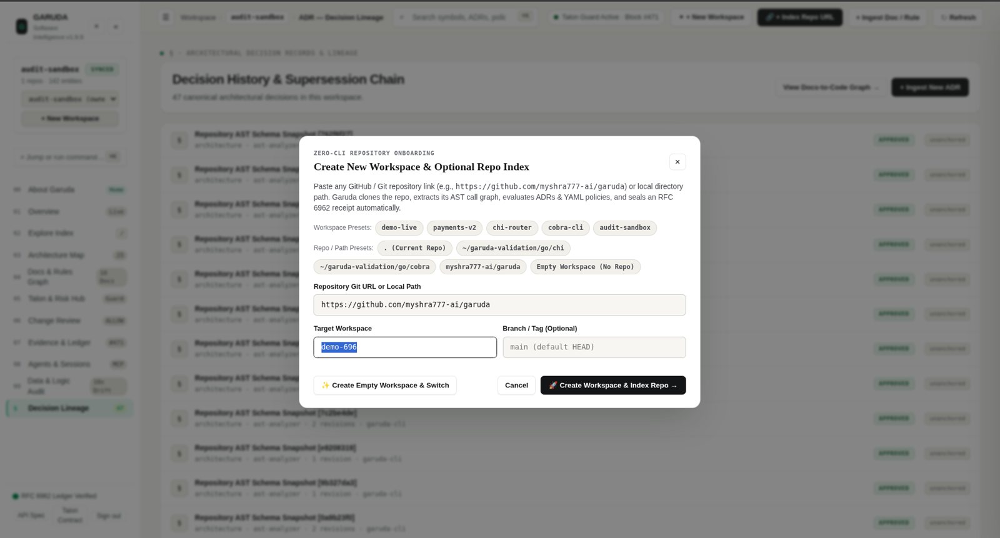
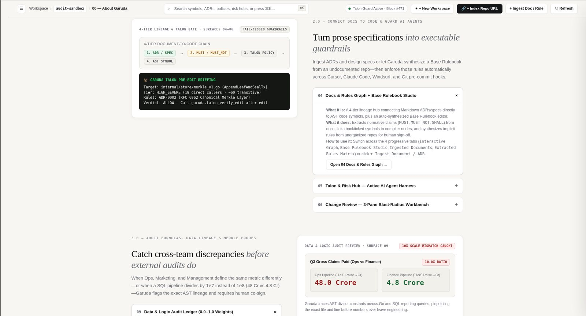
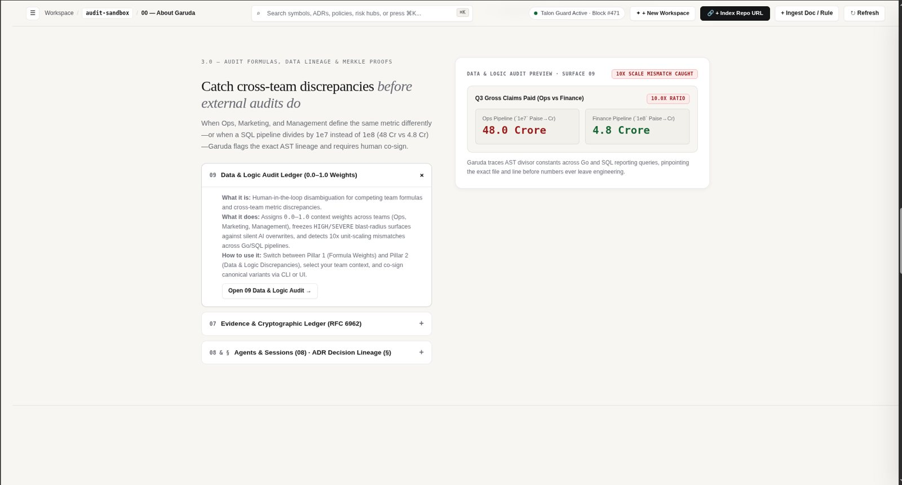

AI can write the code. Garuda makes sure the change respects your system.
Before your coding assistant edits, Garuda tells it what depends on that code and which rules apply. After the edit, it checks the change and says allow, warn, review or block. Every saved decision goes into a tamper-evident record. All of it runs on your machine.
Paste the prompt into your assistant and it installs Garuda for you, using only the official instructions.
- 3
import ( - 4
"context" - 5
"database/sql" - 6
"acme-pay/internal/domain" - 7
)
Payment code imports database/sql directly instead of domain.PaymentRepository.
Repair: remove "database/sql"; call h.repo.RecordChargeTx(ctx, req).
- 21
return h.repo.RecordChargeTx(ctx, req)
The second check passes. Old problems elsewhere in the repository are counted separately and do not block this change.
An illustration of one change. The rule, location and repair text are what garuda demo prints for its planted bug.
Your whole system, on localhost
A dashboard with ten views, served from your own machine. Pick a view to see the real screen.




The front page: every part of Garuda, one click away.
Guarded edits
Checks run before and after every edit your assistant makes, and again on every pull request.
A person decides
When an assistant proposes a rulebook, a formula choice or a fix to a data mismatch, it waits for a named person to sign off.
Plugs into your tools
MCP for any assistant, skills, a GitHub Action, and Slack or Teams alerts.
Three moments in every change
Your assistant is good at writing code. It does not automatically know every decision your team made, every part of the system that depends on the code, or every rule that has to stay true.
Before the edit, Garuda tells the assistant what it is about to touch.
The assistant asks first, so it starts with the facts instead of guessing.
- Who depends on it. Direct callers, and how far a change spreads.
- How critical it is. High, medium or low tier.
- Which rules apply. Your policies and the decisions in your docs.
Example from the dashboard, briefing an assistant before it edits Garuda's own ledger code.
After the edit, every change gets a verdict.
Garuda checks the change against your rules and tells the assistant how to fix what it broke.
- Four verdicts. Allow, warn, review or block.
- Only what is new. Problems the change introduced are kept apart from old ones.
- Repair steps. Plain instructions the assistant can follow.
Recorded on a real commit to Garuda's own repository, 19 November 2026.
At review, you have proof you can hand to anyone.
Saved checks become receipts in a Merkle log, so anyone can see later whether a record was changed.
- A receipt per decision. With the exact command to reproduce it.
- A pull request check. BLOCK fails it; make it required and nobody merges past it.
- Verification. Check a receipt and its proof yourself.
- Receipt
- f7d109f685632559
- Seal
- RFC 6962 block #2012
- Graph
- 2,228 entities · 9,353 relationships
- Reproduce
- garuda check --commit 35a29fdf0f9e --worktree-dirty --dirty-tree-hash a500dfec6b44
From the same recorded run.
Your code stays on your machine
Garuda is built to sit next to your most sensitive code: payments, ledgers, health data. So it was designed from the start to need nothing from us.
It runs where your code is
Analysis, the code graph and every check run locally. Results live in a PostgreSQL database on your own machine, which setup starts on 127.0.0.1.
There is no Garuda cloud
No account with us and nothing to sign up for. The dashboard's login exists only on your machine.
Garuda itself uses no AI model
Its analysis and checks are deterministic code, so Garuda sends nothing to an AI provider. The analyzer is tested to give identical results on repeated runs.
Telemetry is off
It stays off unless you switch it on and give it an address of your own. There is no default destination.
The dashboard loads nothing from the internet
No outside scripts, fonts or trackers. It works on an air-gapped machine.
Every line is open
Read it, audit it, build it yourself.
Leaves your machine only if you set it up
- Slack or Teams alerts you turn on
- The pull request check, which runs in your own CI
- Telemetry, sent to an address you choose
- Cloning a repository you point it at
Real output, as printed
Two recorded runs, shortened, with nothing reworded.
One Garuda for every assistant you use
Cursor, Claude Code and Codex all talk to the same Garuda on your machine. They see the same rules and the same code graph, and their work lands in the same evidence log.
Hand a task from one assistant to another. Garuda saves a checkpoint of where the first one got to and transfers ownership, and the next one resumes from it. A checkpoint can be resumed once.
Six skills your assistant can add
Short playbooks that tell the assistant when to call Garuda. They come with the Claude Code plugin, and the files are in the repository for any other assistant.
- pre-edit-governance
- Before changing code: proceed, revise, or ask a human?
- change-impact
- Who calls this, and how far does the damage spread?
- post-edit-verification
- After the edit: any new violations in this diff?
- violation-repair
- A change was blocked. Fix it without breaking something else.
- architecture-review
- Does the real code match the documented design?
- evidence-verification
- Is this claim backed by code, and is the receipt genuine?
What your assistant can ask
54 tools over MCP, 41 of them read-only. A few of them:
| What breaks if I change this? | garuda.blast_radius |
| Can I edit this file, and which rules apply? | garuda.talon_pre_edit |
| Did my edit break a rule? | garuda.talon_verify_edit |
| Do the docs and the code disagree? | garuda.detect_contradictions |
| Is this receipt genuine? | garuda.verify_receipt |
| Pass this task to another assistant | garuda.handoff, garuda.resume |
The dashboard's Agents and Sessions view shows each assistant's sessions on your machine.
Everything in the free engine
All of this is open source and runs locally.
For your AI assistant
- An MCP server with 54 tools and 6 skills
- Plugins for Claude Code and Codex;
garuda initsets up Cursor and Claude Desktop - A guard that runs before and after every edit
- Read-only mode, and a named human approver for tools that change state
- Task handoff between assistants
For your rules
- Ready-made rule sets: layered, hexagonal, microservices, no circular imports, financial, zero-trust auth, AI agent safety, PII and GDPR/HIPAA, idempotent mutations
- Your design docs and ADRs turned into rules, linked to the code they describe
- No docs yet? A drafted rulebook from your code, for you to approve
- Import from ArchUnit, Dependency-Cruiser and Import Linter
For every pull request
- A GitHub Action that posts the verdict, a receipt hash and a command to reproduce it
- BLOCK fails the check; make it required and nobody merges past it
- A verdict comment, and findings in GitHub's Security tab
- Optional Slack or Teams alerts
Code graph and impact
- A graph of your system: every function, type and import, and who calls what
- How far a change spreads, and high, medium and low tiers for critical code
- A focused map of the neighbourhood you care about, not one tangled graph
For evidence
- An RFC 6962 Merkle log of saved decisions
- Receipts you can verify, with the exact command that produced them
- Inclusion proofs you can check from the dashboard
For numbers that disagree
- Lines up two versions of the same metric, for example one query dividing by
1e7and another by1e8 - Shows the formulas it found in the code and asks a person to decide. It does not guess.
Languages. Go is read with the compiler's own type checker. Python and TypeScript are in Beta. Java is in Beta in the latest source.
Built for code where one mistake is expensive
For teams that already use AI assistants a lot, on a real codebase with rules that matter.
- Payments and fintechMoney movement goes through the layer that guards it.
- Ledgers and billingTwo teams computing the same number get the same answer.
- CommerceCheckout, pricing and inventory rules do not drift.
- Health dataData-access limits hold when an assistant edits the code.
- Data platformsThe formulas behind reports stay the ones you agreed on.
- Platform teamsOne set of architecture rules across many repositories.
Install in a few minutes
One command installs it, starts a local database and the dashboard, and prints your login.
curl -fsSL https://raw.githubusercontent.com/myshra777-ai/garuda/main/install.sh | bash
Prefer to read it first? Clone the repository and run ./setup.sh.
git clone https://github.com/myshra777-ai/garuda.git cd garuda ./setup.sh
Set-ExecutionPolicy Bypass -Scope Process -Force; irm https://raw.githubusercontent.com/myshra777-ai/garuda/main/install.ps1 | iex
Windows 10 or 11, PowerShell 5.1 or 7. Setup installs the Microsoft Visual C++ runtime if it is missing.
npx garuda-guard demo
Runs the demo with no database. Needs Node 18 or newer.
Copy one prompt, paste it into ChatGPT, Claude, Claude Code, Cursor or Codex, and the assistant walks you through the official install.
Check that any download link it gives you starts with https://github.com/myshra777-ai/garuda/.
Then point it at your project
garuda init . --wizard # five short questions garuda rulebook generate # drafts rules from your code garuda check . --diff HEAD # checks what you just changed
garuda init also connects Claude Code, Claude Desktop and Cursor for you.
Add Garuda to your assistant
Install Garuda first. The plugins and the MCP server use the garuda-mcp program and the local database that setup creates.
/plugin marketplace add myshra777-ai/garuda /plugin install garuda@garuda
codex plugin marketplace add myshra777-ai/garuda
Opens Cursor and asks you to confirm. Needs garuda-mcp on your PATH; if Cursor cannot find it, run garuda init in your project, which writes the full path.
The database address is the default that setup creates. Set GARUDA_WORKSPACE to your project's workspace name.
What Garuda does not do
We would rather you trust the rest of this page.
It is not a cage for your assistant
An assistant can ignore advice, and hooks can be switched off. The check that cannot be skipped is a required pull request check.
Static analysis has edges
Go is read with the compiler's type checker. Python, TypeScript and Java are high-precision but Beta, and dynamic runtime behaviour is outside what static analysis can see.
The log proves records were not changed
It does not prove the analysis was complete. And a result is sealed only when the check is saved.
The number tools help a person decide
They line up the formulas you point them at. They do not understand every calculation in a company by themselves.
Work with us
The software is free. When you want help putting it to work, we do it with you. Each engagement is quoted after a short call.
Architecture audit
We run Garuda read-only on one of your repositories and hand you a report: the rules your code already follows, where recent changes drift from them, and what to enforce first. Every finding names the rule it breaks.
Pilot FREE FOR EARLY TEAMS
Garuda set up with you on one repository for a few weeks, with your assistants and your pull requests. We go through the findings together. Your code stays on your machines.
Setup and rollout
Install for your team, connect every assistant, turn on the pull request check and make it required, and draft your first rulebook.
Custom rule packs
Rules written for your domain and your codebase: payments and ledgers, health data, data pipelines, or your own architecture.
Enterprise request PLANNED
Shared rules across every repository and assistant, approvals for exceptions with a record of who decided, single sign-on, long-term audit storage. Not available yet. Tell us what you need and it shapes what we build first.
Something else
A language you need, an integration, or a question about how Garuda fits your setup.
Guides
Short reads, straight from the repository.
Talk to us
Book a call, ask a question, or send a request. You will hear back from the person who builds Garuda.
A 20 to 30 minute call. We can look at one of your repositories together.
Product help: support@getgaruda.in. Press and general questions: info@getgaruda.in.
Let AI move fast. Keep control of what it changes.
Free, open source, and running on your machine in a few minutes.